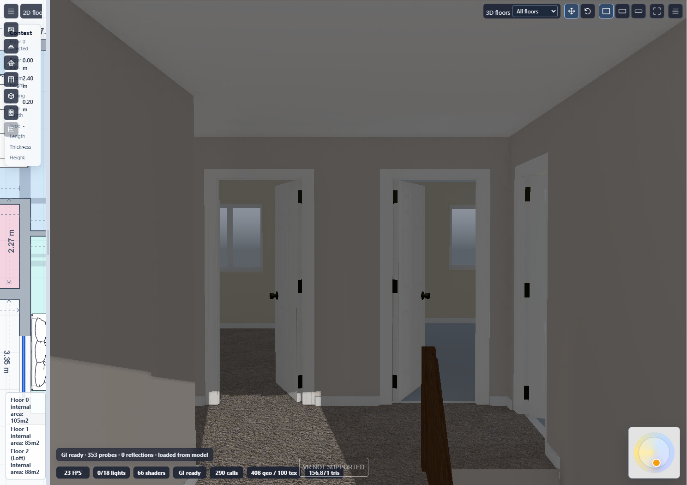
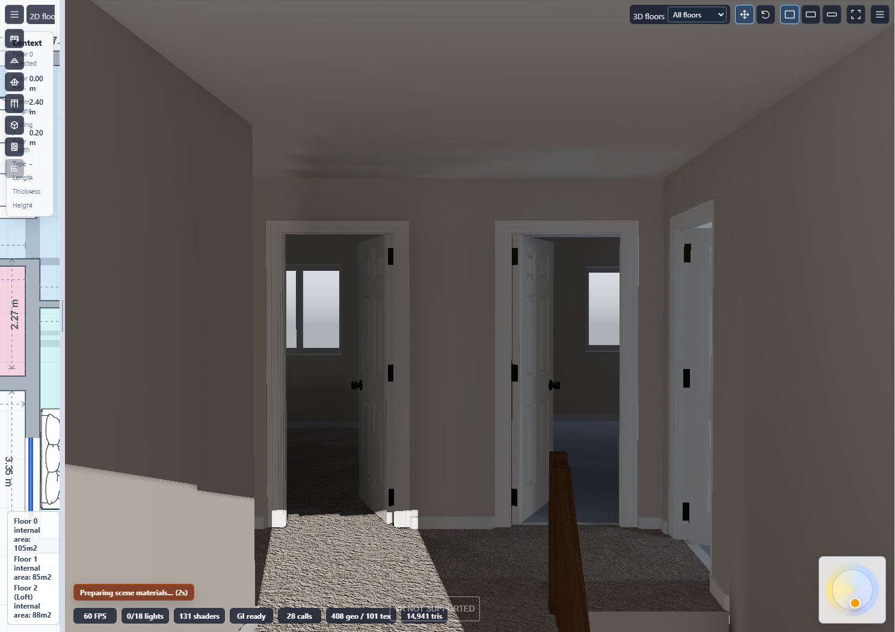
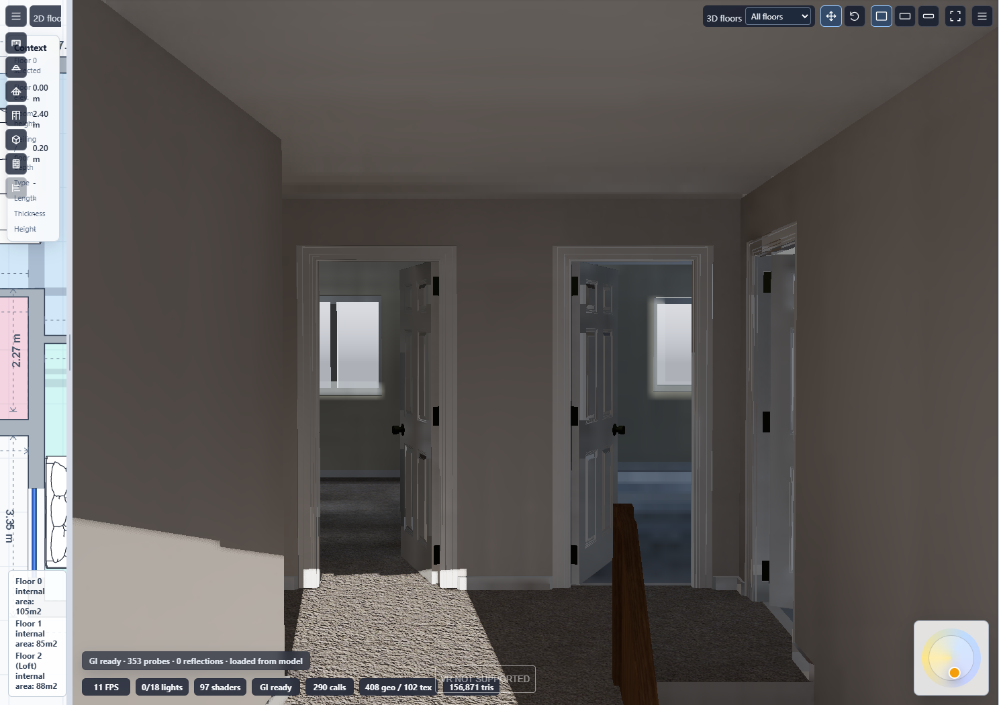
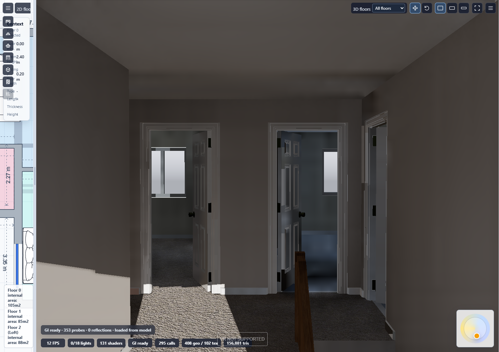

Walkthrough stall fixes: automatic refinement has been removed from navigation. The images below document the earlier lighting comparison.
Bedroom daylight and exposure: later measurements, optional room adaptation, and worker responsiveness fixes.
The normal 3D menu now offers Build (default), Lighting preview, Daylight, Room lights and Brightness. Build uses editing fill and fixed exposure; Lighting preview removes editing fill and adapts exposure. Technical controls, including manual still-view refinement, are under Advanced lighting and diagnostics ? Use saved/custom lighting. The comparisons below document the earlier preset at +2 EV; they are historical measurements, not the current default.

The saved daylight-only Springfield landing, before applying the preset.

The same camera with the realistic preset’s exposure and fill, using existing probe lighting. This separates the preset from the tracing change.

This capture predates the final plane-aware upsampling correction, shown in Balanced below. Full-scene diffuse paths include off-screen geometry, textured reflection, sun, sky, lamps and emission. Direct receiver light is supplied by the existing renderer. Refinement replaces probe irradiance rather than adding it twice.

Four bounces and fewer screen samples. Camera is shifted 10 cm for the motion regression; it is not an exact pixel comparison.
| Mode | Longest image dimension | Samples per receiver | Bounces |
|---|---|---|---|
| Fast | Existing probes | 0 extra | Existing bake |
| Balanced | 64 | 32 | 4 |
| High | 96 | 64 | 6 |
| Ultra | 128 | 128 | 8 |
These dimensions control the camera-local irradiance image, not probe cubemap resolution. A 32-pixel coarse preview appears first; full-resolution samples publish progressively at 4, 16, 32, 64 and 128 as applicable. Four geometry-guided filtering passes reduce noise and reject depth, normal and intervening surface discontinuities.
This is a still-view refinement, not Lumen or real-time path tracing. The house has 364,936 traced triangles. High took 215.2 seconds of tracing and Balanced 26.5 seconds on this test machine, excluding shader compilation and material preparation. Timing varies with hardware and scene. Movement immediately restores probes; a new camera view requires another explicit refinement request.
Real Chrome/WebGL regression passed High, Balanced, stale-camera rejection, Fast cleanup and unchanged GI generation/capture counts. 6,939 High receivers were supported; 0 fell back. Turning refinement off reduced GPU textures from 102 to 101. No browser errors were recorded in this run. The final plane-aware shader was validated by replacing the fragment sampling block in the same isolated browser before the Balanced capture; High was captured before that final correction. Raw browser measurements.
48 focused unit tests and TypeScript build checks passed. Tests cover analytic bounce energy, sunlight occlusion, lamp intensity, progressive sample consistency, boundary-safe filtering, cache compatibility and shader identities. Focused lint passed; the existing large ThreeDView file retains unrelated lint errors.
Small geometric features can retain probe fallback. This is diffuse lighting: it does not add traced specular reflections, refractive transmission or caustics. Geometry/material support is bounded to two million triangles and 16 MiB of sampled textures, with up to 256 pixels per texture side. Unsupported receivers keep probe lighting. The camera cache is temporary and is not saved into a published tour. Ultra’s budget is implemented but the full-house browser regression exercised High and Balanced.